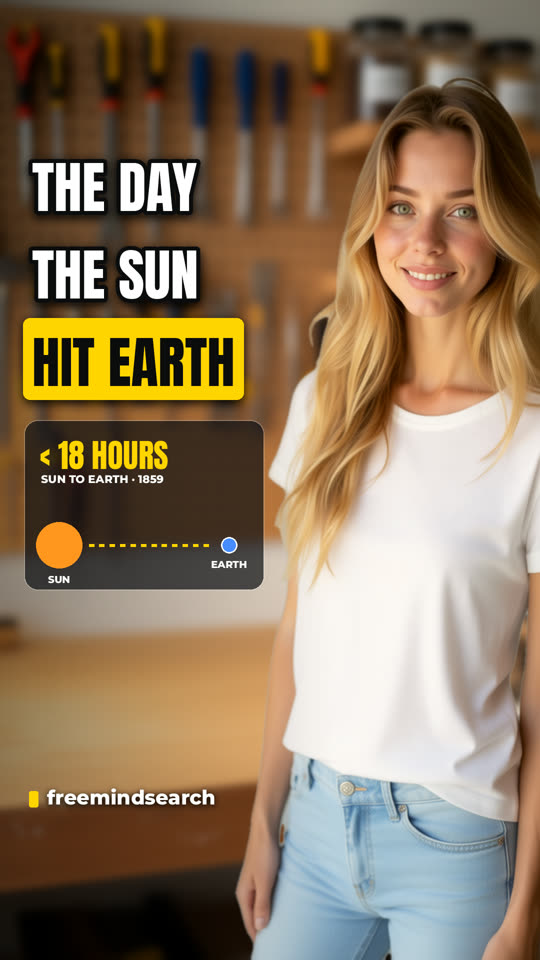

Story
The day the Sun set telegraphs on fire | Carrington Event 1859
On 1 September 1859, Richard Carrington saw a solar flare. Less than 18 hours later the strongest geomagnetic storm on record hit Earth: telegraph machines threw sparks, operators got shocks, auroras lit up Cuba and Hawaii, and two operators between Boston and Portland kept sending messages for two hours with their batteries disconnected.
Watch on FacebookWatch on InstagramWatch on TikTokWatch on YouTube
Would you rather see an aurora over Cuba, or live through a modern Carrington Event?
Sources
- Carrington Event (Wikipedia): https://en.wikipedia.org/wiki/Carrington_Event
- Science History Institute, 'That Time Demons Possessed the Telegraph': https://www.sciencehistory.org/stories/magazine/that-time-demons-possessed-the-telegraph/
- Space.com, 'The Carrington Event': https://www.space.com/the-carrington-event
Made with AI: the presenter, voice and visuals are AI-generated. Every story is researched and fact-checked by a person, with its sources listed.